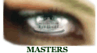

 |
The Official |
|
At EyeOnMajors.com, all services are 100% free. That's almost as reasonable as the price of a Pimento Cheese sandwich at Augusta. Register your entry and create a group for free by clicking the "GET STARTED HERE" link above. Chances are, you and your office will enjoy.. |
||
EyeOnMajors.com Champions Locker Room |
|||
"Champions aren't made in the gyms. Champions are made from something they have deep inside them: A desire, a dream, a vision." -Muhammed Ali EyeOnMajors.com will honor and reward our champions as best we can, now and in the future. |
|||
| Major | Champion | Other Victories | |
Multiple |
Jerry Eye | Illinois Fox Chase Golf Matches 1986 Little League World Series Champion Head Coach (Glenview) |
|
Multiple |
"Wally" | Marine Corps 12-inch Fastpitch Championship, 1972 Found Tiger Woods' golf ball, 2nd hole, USGA Jr. 1992 |
|
Multiple |
Mark Holton | Illinois High School Golf State Championship, 1992 USGA Jr. Illinois Sectional, 1992 |
|
2004 Masters |
Bob Pulford | 1962 NHL Stanley Cup, Toronto Maple Leafs 1963 NHL Stanley Cup, Toronto Maple Leafs 1964 NHL Stanley Cup, Toronto Maple Leafs 1967 NHL Stanley Cup, Toronto Maple Leafs |
|
2005 Masters |
Tee Watson | [awaiting biography of Mr. Tee Watson] | |
2005 US Open |
Mark Shaprow | [awaiting biography of Mr. Mark Shaprow] | |
2005 Open Championship |
Kevin Kelly | [awaiting biography of Mr. Kevin Kelly] | |